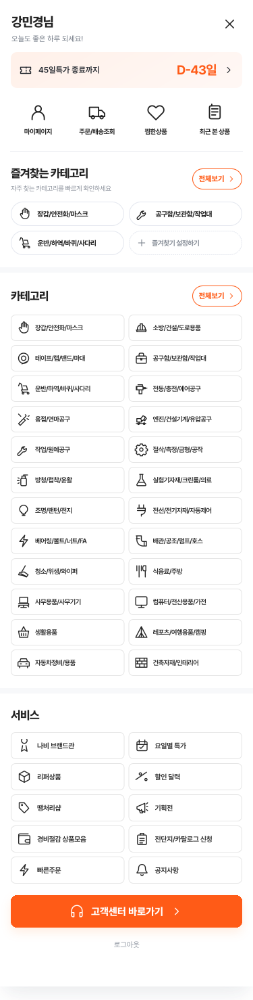
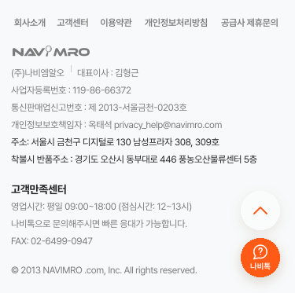
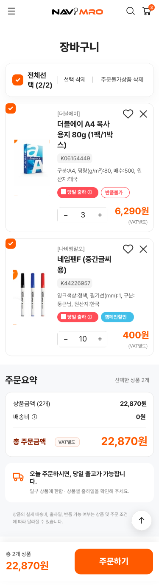
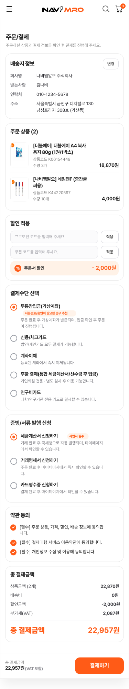
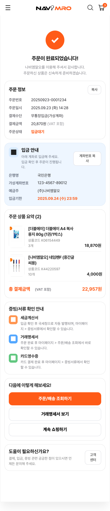

고객이 물은 내용
2019년 자사 고객 문의 분석 자료에서 서류 발급, 입금 계좌, 상품 추천, 장바구니 수량에 관한 문의를 추렸습니다.
2019년 자사 고객 문의 분석2019년에 모인 고객 문의(VOC)를 살펴봤습니다. 고객이 상품을 찾고, 크기와 종류를 고르고, 결제한 뒤 필요한 서류를 확인하는 과정에서 무엇이 어려운지 생각했습니다. 그 내용을 바탕으로 모바일 구매 화면을 새로 구성했습니다.

2019년 고객 문의를 주제별로 정리했습니다. 그런 다음 현재 공개된 구매 안내를 보며 고객이 각 정보를 어느 화면에서 찾는지 확인했습니다.
2019년 자사 고객 문의 분석 자료에서 서류 발급, 입금 계좌, 상품 추천, 장바구니 수량에 관한 문의를 추렸습니다.
2019년 자사 고객 문의 분석공식 이용 안내와 자주 묻는 질문에서 상품 검색부터 주문 조회까지의 순서를 확인했습니다.
공개된 이용 안내 확인상품 찾기부터 서류 확인까지 이어지는 화면을 새로 구성했습니다.
효과는 아직 확인 전2019년 고객 문의 자료에서 자주 나온 내용 여섯 가지를 골랐습니다. 숫자는 당시 자료에 적힌 대략적인 문의 건수입니다.
어디서 발급받고 확인하는지 문의
서류를 어디서 확인하는지 문의
입금할 계좌를 어디서 보는지 문의
필요한 상품을 추천해 달라는 문의
장바구니에 몇 개까지 담을 수 있는지 문의
상품평을 어디서 보는지 문의
당시에 작성한 집계표를 다시 확인하지 못했습니다. 정확한 기간과 같은 문의가 여러 번 포함됐는지는 확인이 필요합니다. 지금의 문의 건수는 아닙니다.
과거 문의는 고객이 어려워했던 내용을 알려줍니다. 현재 이용 안내는 그 정보가 어느 단계에서 필요한지 살펴보는 데 썼습니다. 두 자료는 시점이 달라 같은 조사 결과로 보지 않았습니다.
그래서 각 화면에 필요한 정보와 다음에 누를 버튼을 함께 보이도록 했습니다.
출처: 2019년 고객 문의 분석 자료 및 나비엠알오 공식 이용 가이드, 공식 자주 묻는 질문 (2026.10.01 확인). 현재 고객이 실제로 어떻게 행동했는지 측정한 자료는 아닙니다.
고객이 다음 단계로 넘어가기 전에 무엇을 알아야 하는지 생각했습니다.
상품 이름을 아는 사람은 바로 검색하고, 모르는 사람은 상품 종류나 추천 목록에서 찾게 합니다.
고른 상품의 크기, 수량, 가격을 장바구니와 주문 화면에서도 볼 수 있게 합니다.
상품의 크기와 가격처럼 구매에 필요한 내용을 먼저 보여줍니다.
입금 방법은 결제할 때 알려주고, 주문 후에는 세금계산서 같은 서류의 상태를 쉽게 확인하게 합니다.
앞에서 정한 네 가지 기준을 실제 화면에 적용했습니다. 화면을 바꾼 뒤의 효과는 아직 측정하지 않았습니다.
| 구매 단계 | 고객이 겪을 수 있는 어려움 | 바뀐 화면 |
|---|---|---|
| 상품 찾기 | 상품 이름이나 크기를 모르면 여러 번 검색해야 함 | 검색, 상품 종류, 조건별 찾기, 추천을 구분해서 보여줌 |
| 상품 고르기 | 상품 화면과 장바구니를 오가며 크기와 수량을 다시 확인 | 고른 크기·수량·금액을 다음 화면에도 계속 표시 |
| 결제 | 결제 방법과 서류 발급 조건을 다른 안내에서 다시 찾아야 함 | 결제 화면에서 조건을 알리고 주문 후 할 일을 안내 |
| 주문 후 확인 | 주문 상태와 필요한 서류를 어디서 보는지 다시 찾아야 함 | 내 정보 화면에서 주문 내용과 서류 상태를 함께 확인 |
상품을 찾는 화면부터 주문 후 서류를 확인하는 화면까지 순서대로 볼 수 있습니다. 휴대폰 안을 스크롤하면 화면 전체가 보입니다.
첫 화면, 검색, 상품 종류를 차례로 살펴볼 수 있게 했습니다.



상품의 중요한 내용을 먼저 보여주고, 크기와 수량을 여러 개 고를 때도 선택한 내용을 계속 보여줍니다.





배송지와 결제 방법, 입금과 서류 발급 조건을 주문 전에 보여주고, 주문 후 할 일도 안내합니다.


주문 뒤에도 배송 상태와 필요한 서류를 쉽게 찾을 수 있어야 합니다.


아래는 화면을 바꾸면 좋아질 것으로 기대하는 점입니다. 실제로 좋아졌는지는 아직 측정하지 않았습니다.
고른 크기와 수량, 금액이 다음 화면에도 보이면 결제 전에 다시 확인하는 일이 줄어들 것으로 예상합니다.
화면을 누르는 횟수와 주문에 걸리는 시간 줄이기상품의 크기와 수량을 한곳에서 비교하면 잘못 담고 다시 고치는 일이 줄어들 것으로 예상합니다.
잘못 고른 상품을 다시 수정하는 일 줄이기검색과 상품 종류, 조건별 찾기를 구분하면 필요한 상품을 더 쉽게 찾을 것으로 예상합니다.
필요한 상품을 찾고 주문까지 마치는 경우 늘리기결제 조건과 서류 상태를 미리 보여주면 “언제 나오나요?”, “어디서 보나요?”라는 문의가 줄어들 것으로 예상합니다.
서류 발급에 관한 고객 문의 줄이기위 내용은 과거 고객 문의와 화면을 바탕으로 세운 예상입니다. 실제 성과를 나타내는 수치는 아닙니다.